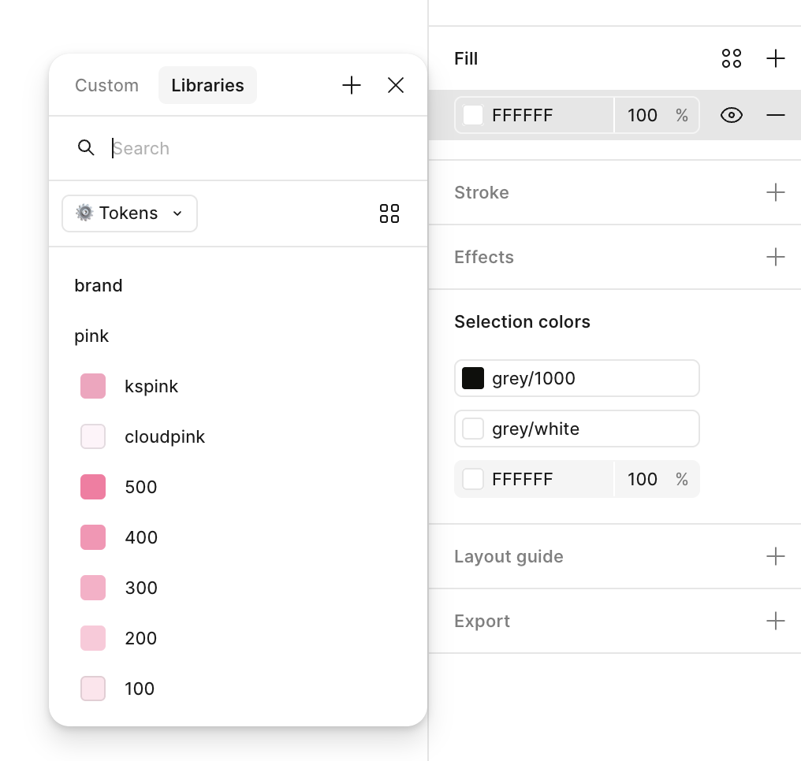
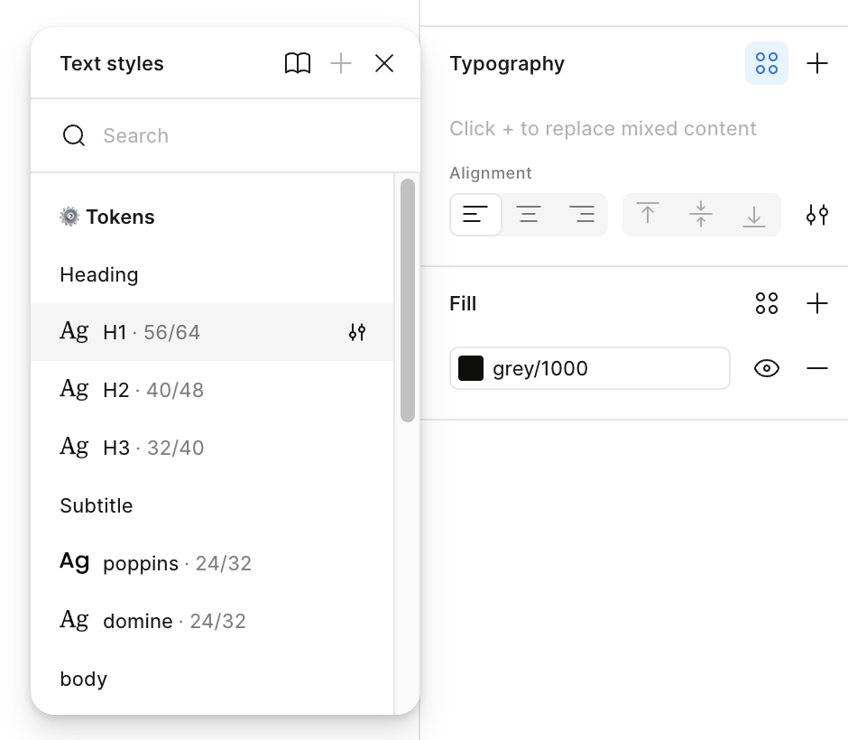

Creative × UX
Creative defines the brand language. UX turns it into a system that works consistently across experiences and domains, while creating reusable Figma assets that help Creative move faster.
Workflow
Input
Creative
UX Design
Output
Components
Typography
Color
How to use the Figma library
Use these steps to build with the shared brand foundations instead of recreating assets from scratch.
01
Add components
- Open Assets in Figma’s left sidebar and click the small Library book icon.
- Open Manage libraries, go to Teams, then hover over Component Library and click Add to file. Repeat this for Tokens.
- In any design file, return to Assets and open the Component Library.
- Open Buttons and start with Visual btn, or browse the library for another component.
02
Change color
- Select the layer you want to update.
- In the right sidebar, find Fill and open the library selector.
- Choose a color from Tokens, or search for the token you need.
- Use the gradient tokens when the design calls for a gradient.

03
Apply typography
- Select the text layer you want to format.
- In the right sidebar, open the shared style selector under Typography.
- Choose the style by purpose: headings for titles, body styles for reading, and captions for labels.
